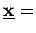
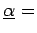
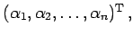
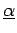
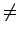
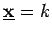
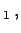
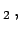
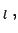

Besitzt es eine nichttriviale Lösung
   d.h.
, dann ist auch
 mit
k beliebig reell eine Lösung des homogenen Gleichungssystems. Besitzt es
l nichttriviale, linear unabhängige Lösungen
  ...,
 dann bilden diese ein sogenanntes
Fundamentalsystem, und die allgemeine Lösung des homogenen linearen Gleichungssystems ist von der Form
Gilt für den Rang der Koeffizientenmatrix  des homogenen Gleichungssystems r < n, wobei n die Anzahl der Unbekannten ist, dann besitzt das homogene Gleichungssystem ein Fundamentalsystem von Lösungen. Im Falle r = n hat das homogene System nur die Triviallösung.
des homogenen Gleichungssystems r < n, wobei n die Anzahl der Unbekannten ist, dann besitzt das homogene Gleichungssystem ein Fundamentalsystem von Lösungen. Im Falle r = n hat das homogene System nur die Triviallösung.
Zur Bestimmung eines Fundamentalsystems im Falle r < n können n - r Unbekannte als freie Parameter gewählt werden, und zwar derart, daß sich die übrigen Unbekannten durch diese ausdrücken lassen, d.h., die entsprechende r-reihige Unterdeterminante darf nicht Null sein. Man kann das durch Umordnen der Gleichungen und Unbekannten erreichen. Erhält man z.B.
dann ergeben sich die Fundamentallösungen z.B. durch die folgende Wahl der freien Parameter: